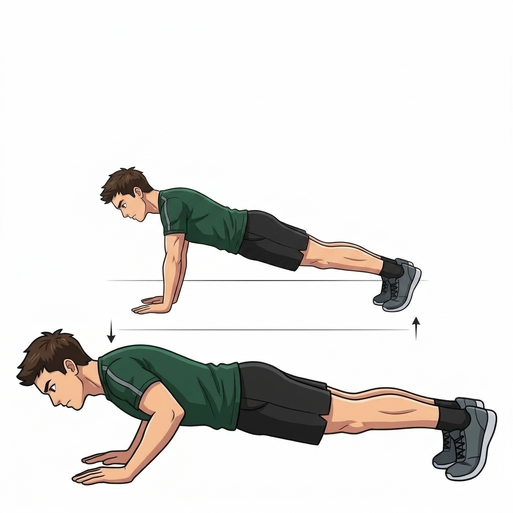
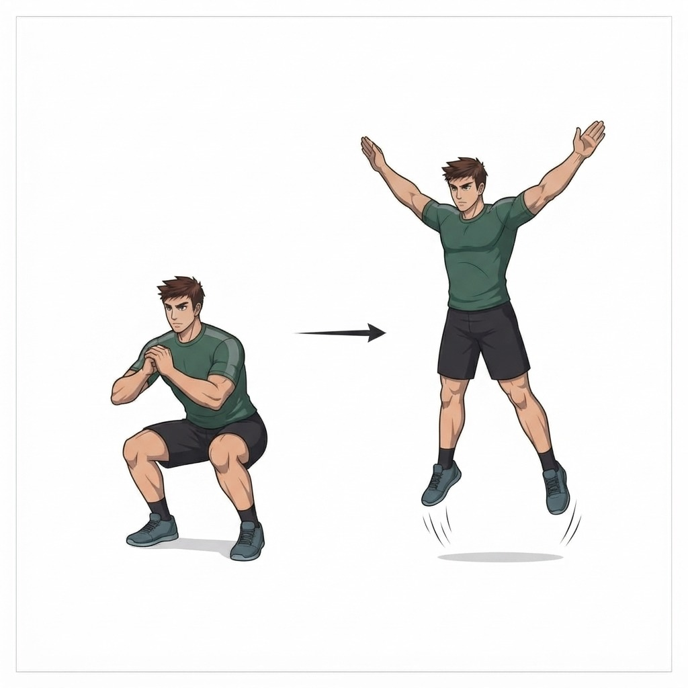
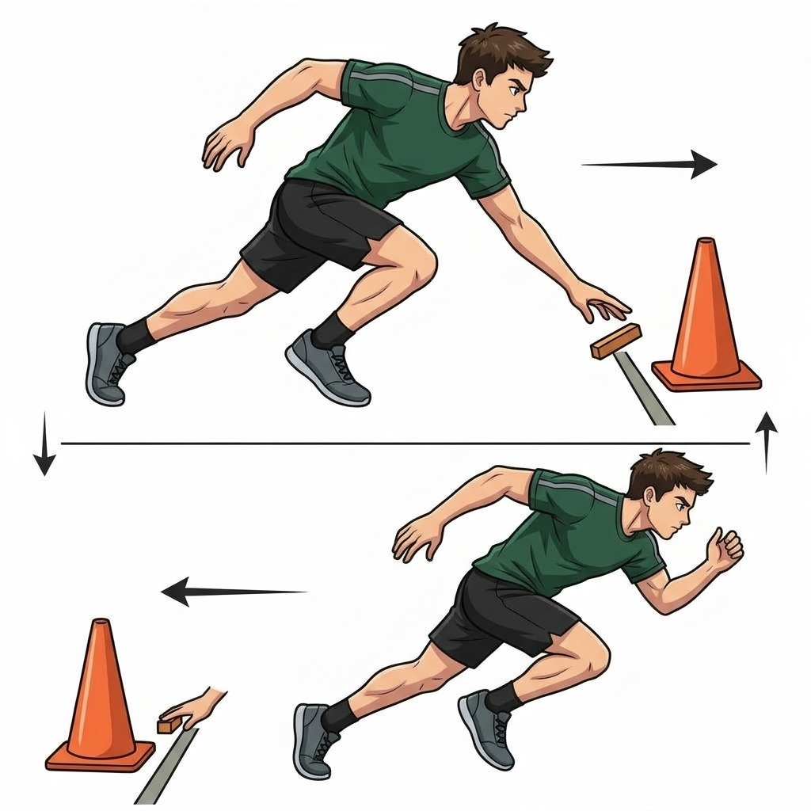
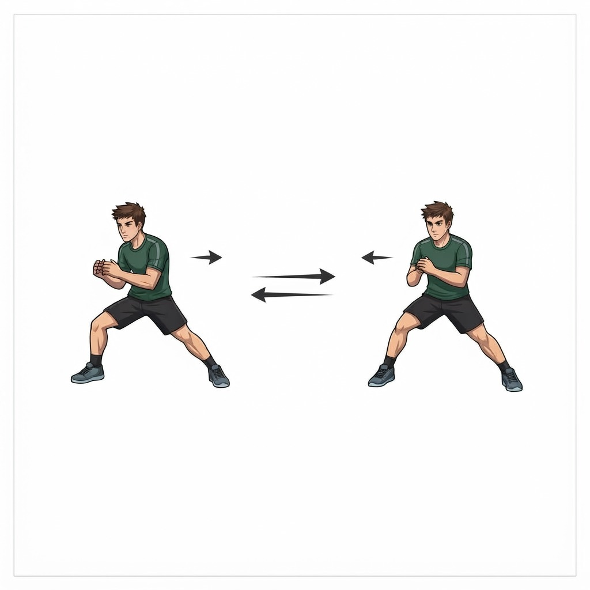
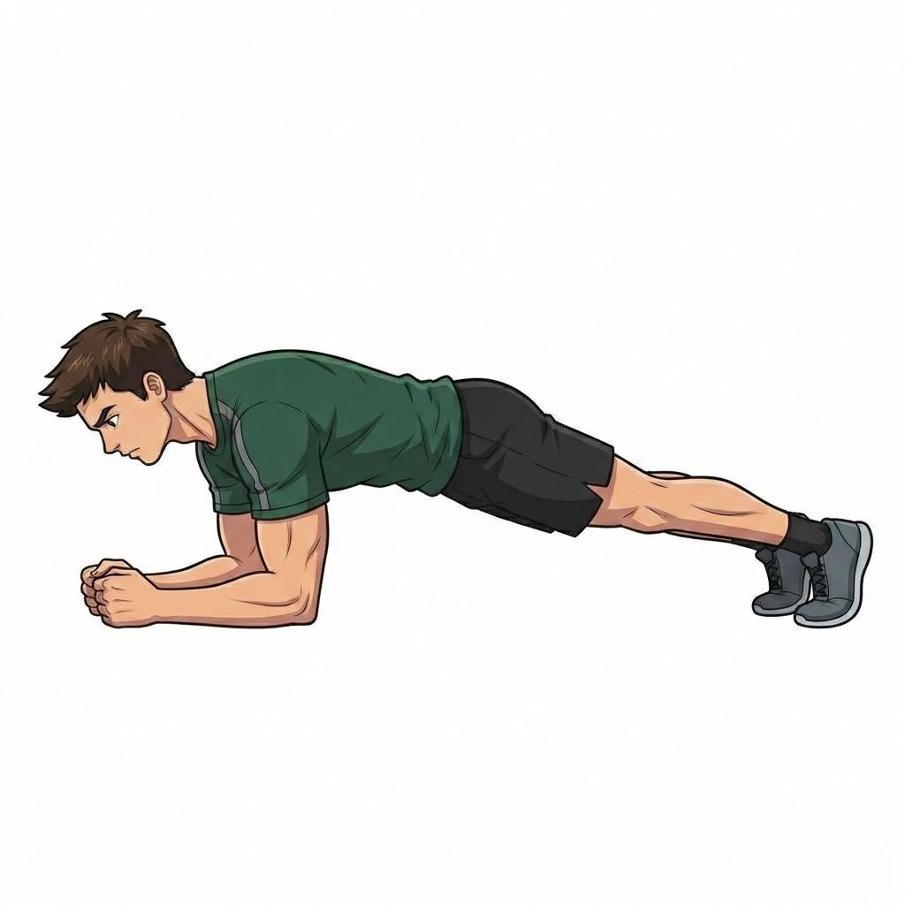
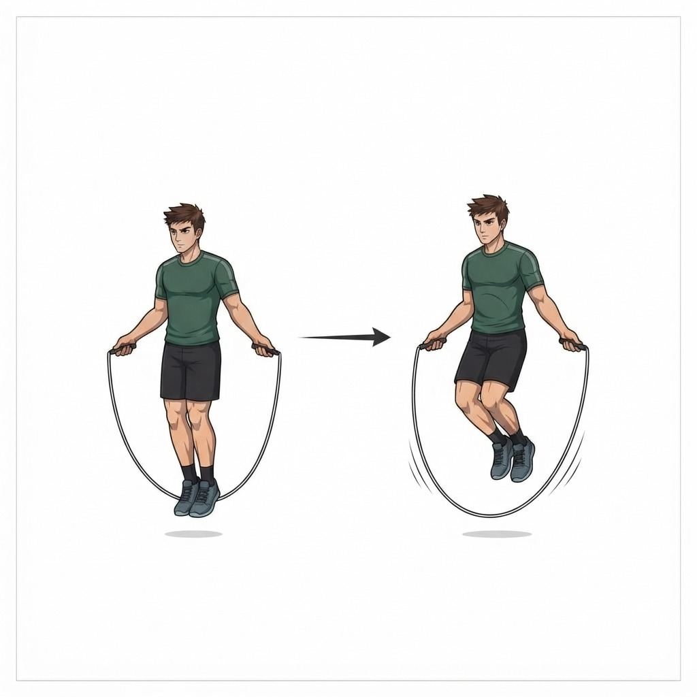

Teknik Dasar Fisik
-
Push Up

Penjelasan: Gerakan mengangkat dan menurunkan tubuh dengan bertumpu pada telapak tangan dan ujung jari kaki dalam posisi tengkurap lurus. Latihan ini berfokus untuk melatih kekuatan otot dada, bahu, trisep (lengan bagian belakang), serta otot inti (core).
-
Squat Jump

Penjelasan: Variasi gerakan squat (jongkok) yang diikuti dengan lompatan eksplosif ke atas secara vertikal, lalu mendarat kembali ke posisi jongkok. Gerakan ini melatih kekuatan dan daya ledak otot kaki (paha dan betis) serta bokong.
-
Shuttle Run

Penjelasan: Latihan lari bolak-balik secepat mungkin di antara dua titik batas yang berjarak dekat (biasanya 5 hingga 10 meter) sambil menyentuh garis atau memindahkan benda. Tujuannya untuk melatih kelincahan (agility), kecepatan akselerasi, dan kemampuan mengubah arah tubuh.
-
Lateral Shuffle

Penjelasan: Gerakan melangkah menyamping (ke kiri dan ke kanan) secara cepat dengan posisi lutut sedikit ditekuk dan pinggul rendah seperti setengah jongkok, tanpa menyilangkan kaki. Gerakan ini efektif melatih kelincahan gerak menyamping, keseimbangan, dan otot paha bagian luar maupun dalam.
-
Plank

Penjelasan: Latihan statis menahan posisi tubuh lurus seperti papan (bertumpu pada lengan bawah/siku dan ujung jari kaki) selama durasi waktu tertentu. Latihan ini sangat efektif untuk memperkuat otot perut, punggung bawah, dan stabilitas otot inti (core).
-
Squat Jump

Penjelasan: Aktivitas melompati tali yang diputar melewati bawah kaki dan atas kepala secara berirama menggunakan pergelangan tangan. Gerakan kardio ini bermanfaat untuk meningkatkan daya tahan jantung-paru, koordinasi tubuh, serta kekuatan otot betis.